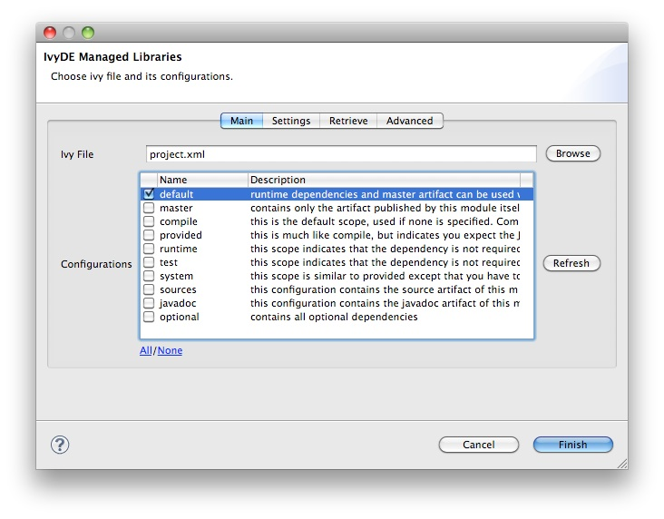

Use with maven poms
General
If you want to use a maven pom.xml instead of ivy.xml file, you just have to select a pom file in the configuration form of IvyDE class path.
When a maven pom is selected, the configurations list is updated with all maven scopes.
Both examples below are a good illustration of maven pom use simplicity :
Maven1 Sample
This sample presents a simple use case of maven pom for IvyDE class path container. We are going to create an eclipse project on commons-httpclient sources.
- Download the commons httpclient sources
- Unzip this file (c:/tmp/commons-httpclient/)
- Create a new Eclipse java project based on the unzipped sources (c:/tmp/commons-httpclient/)

Notes: your project do not compile: some imports cannot be resolved.
- Add a new class path container based on the "project.xml" pom and select "default" configuration (maven scope)

- That's all : your project compiles !

Maven2 Sample
This sample shows that IvyDE Class path container on a Maven2 pom can handle transitive dependancies.
- Create a new empty java project in eclipse.
- In your Ivy project configuration, set the ivy settings file below (Project/Properties/Ivy):
<ivysettings>
<conf defaultResolver="ibiblio"/>
<resolvers>
<ibiblio name="ibiblio" />
</resolvers>
</ivysettings>
Using the m2compatible attribute, you can benefit from Maven2 repository compatibility.
- Add the pom below in your project and select it for an IvyDE class path container choosing "compile" and "runtime" configurations.
<project>
<modelVersion>4.0.0</modelVersion>
<groupId>com.mycompany</groupId>
<artifactId>myproject</artifactId>
<version>1.0-SNAPSHOT</version>
<dependencies>
<dependency>
<groupId>commons-httpclient</groupId>
<artifactId>commons-httpclient</artifactId>
<version>3.0</version>
</dependency>
</dependencies>
</project>
- That's all ! Your IvyDE class path container gets all dependencies even those that were transitive to the commons-httpclient module !

Printer Friendly